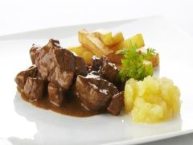

~TheSavoury~
Ingredients
How to make a beef stew Flemish recipe called Stoverij: a stew made of meat braised in dark beer, with the added flavor component of thyme and Ghent’s mustard.
In a casserole, caramelize the onion, adding the herbs halfway through the process. The slower you brown the onions, the better they’ll taste. They should be almost done to your satisfaction before you brown the meat. Add salt and pepper to your meat, then sear it in butter at high temperature in a frying pan, until it is browned on all sides. You’re just searing the meat, not stewing it yet. When there’s a crust on all sides, slide the browned meat into the casserole with the onions. Throw some beer into the frying pan to deglaze it, scraping the bottom of the pan, then add this to the casserole as well. Add beer to the casserole until all the meat is just covered—top off with stock. Once you’ve reached a boil, add the bread with one side of which is slathered in mustard the top of the stew, mustard-side down. Cook, either on the stovetop at a low temperature or at 100 °C in the oven, for at least three hours, but preferably even longer. The meat should be tender enough to cut easily with the tip of a fork. Serve with fries and mayonnaise—it’s even better reheated the next day!